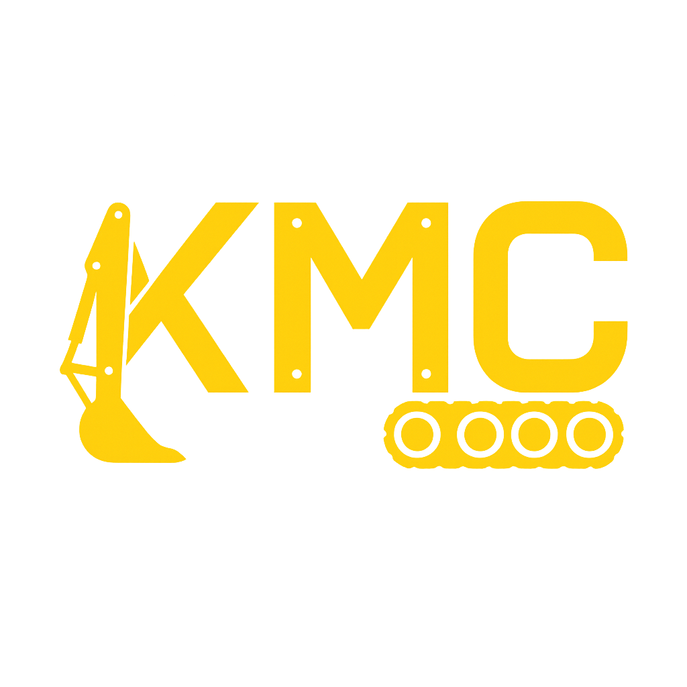

Engineered for PC & Handheld
We offer LOGO design if required for your website.The Logo below is one we designed for ourselves for on site recognition on apparel or PPE. It has proven very effective with compamies approaching in luchrooms and conference rooms, as well as during meetings, to ask about our services.

Clean Code
KMC only builds static sites on this space using hand-crafted HTML, CSS, and JavaScript for optimal performance and simplicity.We avoid unnecessary frameworks and libraries to keep the codebase lean and efficient.This approach allows us to deliver fast, reliable, and maintainable websites for our clients.
The code is constructed this way in order to minimise cost for us and the client, it enables us to deploy your website for viewing by freinds and clients and with this time you can gather feedback and make necessary adjustments before the final launch.
By focusing on static sites and clean code, we minimize potential security vulnerabilities and reduce the need for ongoing maintenance, allowing our clients to have a reliable and efficient web presence.
Responsive Design
In order to be responsive, our designs adapt seamlessly to various screen sizes and devices, ensuring an optimal user experience on both mobile and desktop platforms.
Approach us via email,send us your photos and any other media you would like to include on your site.
We will direct you on how to send the files to us for integration.Dropbox is our go to for files transfer and sharing. More information about this ison the Contact page.
Purchasing from your website
KMC does not build backends on this site.Instead, we focus on static sites that can integrate with trusted third-party e-commerce solutions like PayPal or Stripe. If you want to accept payments we will set up a direct integration with your chosen platform.Example on Home page button "Connect to PayPal".
We will guide you through the process of integrating your preferred payment method into your static site, ensuring a seamless and secure transaction experience for your customers.An example of this is on the home page witht the "Connect to PayPal" buttonand services which can be quickly toggled to facilitate transactions.